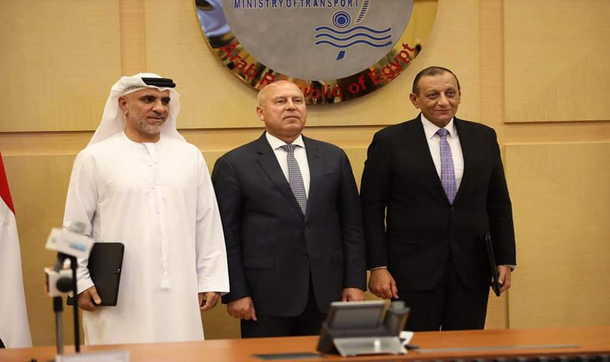
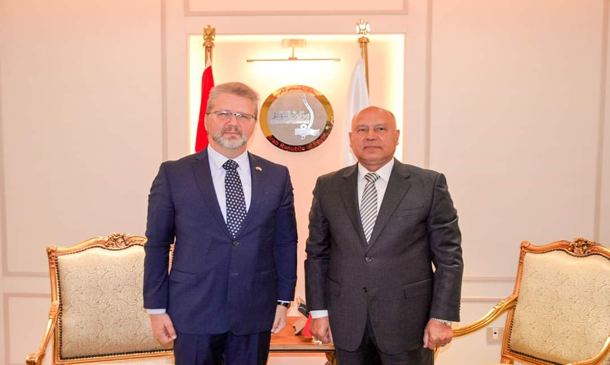

-
 The Minister of Transport witnesses the initial signing of a contract granting a commitment to build, develop, manage, operate, market, maintain and redeliver passenger and cruise ship terminals at the ports of Hurghada, Safaga and Sharm El Sheikh between the General Authority of Red Sea Ports and the Abu Dhabi Ports Group.
Lieutenant General Engineer Kamel Al-Wazir stated that this contract comes within the framework of the directives of His Excellency President Abdel Fattah El-Sisi, President of the Republic, to maximize yacht tourism and cruise ship tourism in Egypt.
-
The Minister of Transport Discusses with the Chairman of the Suez Canal Authority and the Federation of Egyptian Industries Ways to Maximize, Develop and Localize Shipbuilding and Repairing Industry in Egypt
In implementation of the directives of His Excellency the President to localize the transport industry in Egypt, including heavy industries, shipbuilding and repairing industries and related industries, the Minister of Transport discusses with the Chairman of the Suez Canal Authority and the Federation of Egyptian Industries ways to maximize, develop and localize the shipbuilding and repairing industry in Egypt
-
 The Minister of Transport receives the Ambassador of Lithuania in Cairo to discuss ways of cooperation in various fields of transport.
Lieutenant General Engineer Kamel Al-Wazir , the Minister of Transport receives the Ambassador Arturas Gailiunas - the Ambassador of Lithuania in Cairo, to discuss ways of joint cooperation between the two sides in various fields of transport. …
-

The Minister of Transport Meets the Ambassador of Rwanda in Cairo to Discuss Ways of Cooperation in Various Fields of Transport
Lieutenant-General Engineer Kamel Al-Wazir, Minister of Transport, met with Ambassador Dan Muniuza, Ambassador of the Republic of Rwanda in Cairo, to discuss strengthening joint cooperation between the two sides in various fields
(Quoted from the Maritime Transport Sector page) …
-

Prime Minister Begins an Extensive Inspection Tour of a Number of Projects in the Suez Canal Economic Zone
The Prime Minister begins an extensive inspection tour of a number of projects in the Suez Canal Economic Zone, accompanied by Lieutenant General Eng. Kamel Al-Wazir, Minister of Transport, Mr. Walid Gamal El-Din, Chairman of the General Authority of the Suez Canal Economic Zone, and Dr. Abdullah Ramadan, Deputy Governor of Suez. …